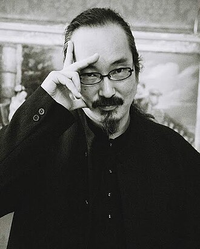

Биография
 C юности Кон увлекался мангой и аниме, в частности франшизой Mobile Suit Gundam, а также западными комиксами Алана Мура и Фрэнка Миллера. Это, а также пример старшего брата, сподвигло его заняться рисованием самому. В 1990 году в публикацию вышла его первая профессиональная работа под названием «Возвращение в море». Сатоси Кон учился в Musashino College of the Arts на художника, после чего совместно с Кацухиро Отомо работал над мангой World Apartment Horror, а в 1991 году снял по сценарию Отомо аниме Roujin Z. Сатоси Кон больше всего известен своими полнометражными анимационными фильмами. Первые два фильма, Perfect Blue (1998) и «Актриса тысячелетия» (2001), повествуют о карьере актрисы — в первом случае тяжелой карьере, а во втором счастливой. Фильм «Однажды в Токио» (2003) представляет собой рождественскую притчу, главными героями которой являются японские бездомные и беспризорный младенец. Фантастический фильм «Паприка» (2006) рассказывает об устройстве, позволяющем контролировать сны людей. Для фильмов Сатоси Кона характерен гиперреализм графики, психологичность сюжета и смешение иллюзии с реальностью. Скончался в Токио в возрасте 46 лет от рака поджелудочной железы. Перед смертью работал над новым полнометражным аниме с рабочим названием Dreaming Machine. Вплоть до своей смерти Сатоси Кон записывал все свои переживания после того как узнал о своей тяжёлой болезни. Узнав, что он неизлечимо болен, Сатоси Кон просто не мог принять того факта, что он скоро умрёт. Культовый режиссёр испытывал сильные боли в нескольких местах спины, а также в суставах ног, потеряв силу в правой ноге, по итогу хромая. Сатоси Кон стал ходить к специалисту по акупунктуре и хиропрактике, но это не помогло. Кон получил заявление от кардиолога из больницы Красного креста в Мусасино, что ему осталось жить в лучшем случае полгода. Рак поджелудочной железы продолжал прогрессировать, становясь всё летальнее для организма режиссёра. Сатоси Кон, хотевший вернуться в свой дом, всё же умер в больнице Красного креста, перед смертью видя галлюцинации («шагающая строчка календаря»)